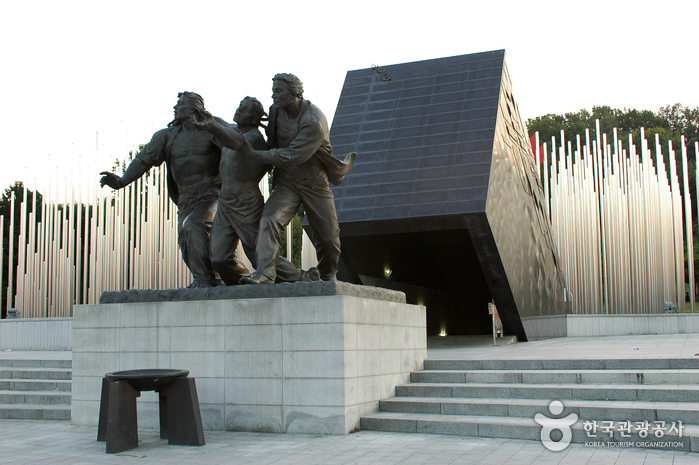

May 18th National Cemetery was built to honor those who participated and died in the Gwangju Uprising. It was built by the government of South Korea in 1997 in order to help those affected seek closure in memorial. This is a living site as on every anniversary of the uprising, people flock to the site to honor the dead. Many of the people that died in the uprising were young students. In the aftermath of the slaughter the dead were heaped into garbage trucks, piled up and left to rot, and burned. The cemetary allows for respectful burial to be given to the victims.
Return to Gallery